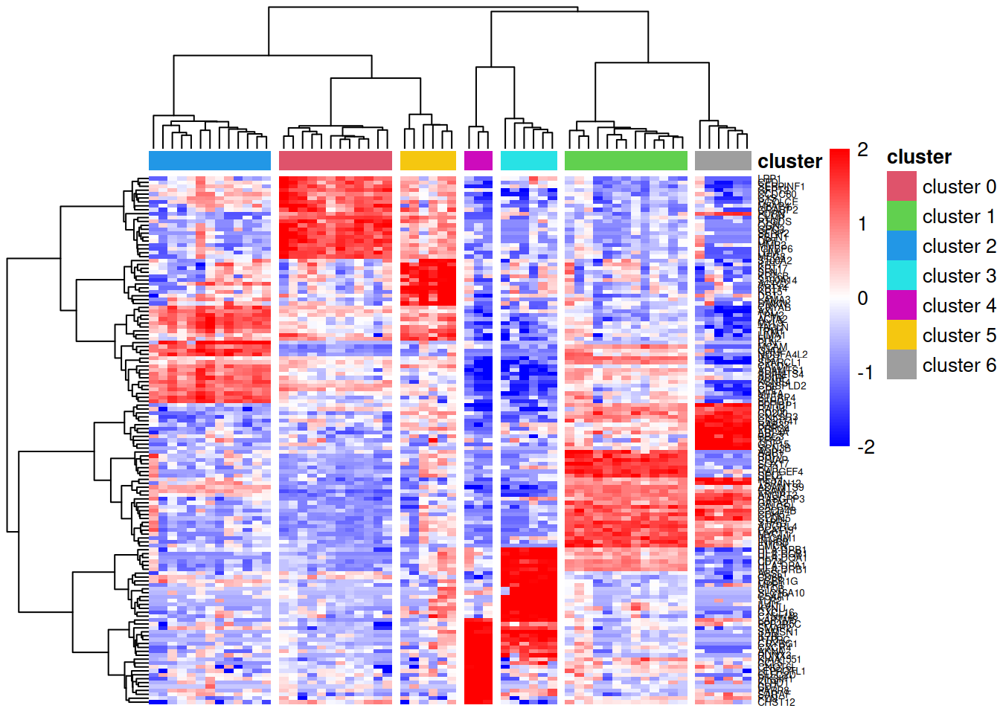

Last updated: 2026-02-03
Checks: 7 0
Knit directory: muse/
This reproducible R Markdown analysis was created with workflowr (version 1.7.1). The Checks tab describes the reproducibility checks that were applied when the results were created. The Past versions tab lists the development history.
Great! Since the R Markdown file has been committed to the Git repository, you know the exact version of the code that produced these results.
Great job! The global environment was empty. Objects defined in the global environment can affect the analysis in your R Markdown file in unknown ways. For reproduciblity it’s best to always run the code in an empty environment.
The command set.seed(20200712) was run prior to running
the code in the R Markdown file. Setting a seed ensures that any results
that rely on randomness, e.g. subsampling or permutations, are
reproducible.
Great job! Recording the operating system, R version, and package versions is critical for reproducibility.
Nice! There were no cached chunks for this analysis, so you can be confident that you successfully produced the results during this run.
Great job! Using relative paths to the files within your workflowr project makes it easier to run your code on other machines.
Great! You are using Git for version control. Tracking code development and connecting the code version to the results is critical for reproducibility.
The results in this page were generated with repository version 158ac67. See the Past versions tab to see a history of the changes made to the R Markdown and HTML files.
Note that you need to be careful to ensure that all relevant files for
the analysis have been committed to Git prior to generating the results
(you can use wflow_publish or
wflow_git_commit). workflowr only checks the R Markdown
file, but you know if there are other scripts or data files that it
depends on. Below is the status of the Git repository when the results
were generated:
Ignored files:
Ignored: .Rproj.user/
Ignored: data/1M_neurons_filtered_gene_bc_matrices_h5.h5
Ignored: data/293t/
Ignored: data/293t_3t3_filtered_gene_bc_matrices.tar.gz
Ignored: data/293t_filtered_gene_bc_matrices.tar.gz
Ignored: data/5k_Human_Donor1_PBMC_3p_gem-x_5k_Human_Donor1_PBMC_3p_gem-x_count_sample_filtered_feature_bc_matrix.h5
Ignored: data/5k_Human_Donor2_PBMC_3p_gem-x_5k_Human_Donor2_PBMC_3p_gem-x_count_sample_filtered_feature_bc_matrix.h5
Ignored: data/5k_Human_Donor3_PBMC_3p_gem-x_5k_Human_Donor3_PBMC_3p_gem-x_count_sample_filtered_feature_bc_matrix.h5
Ignored: data/5k_Human_Donor4_PBMC_3p_gem-x_5k_Human_Donor4_PBMC_3p_gem-x_count_sample_filtered_feature_bc_matrix.h5
Ignored: data/97516b79-8d08-46a6-b329-5d0a25b0be98.h5ad
Ignored: data/Parent_SC3v3_Human_Glioblastoma_filtered_feature_bc_matrix.tar.gz
Ignored: data/brain_counts/
Ignored: data/cl.obo
Ignored: data/cl.owl
Ignored: data/jurkat/
Ignored: data/jurkat:293t_50:50_filtered_gene_bc_matrices.tar.gz
Ignored: data/jurkat_293t/
Ignored: data/jurkat_filtered_gene_bc_matrices.tar.gz
Ignored: data/pbmc20k/
Ignored: data/pbmc20k_seurat/
Ignored: data/pbmc3k.csv
Ignored: data/pbmc3k.csv.gz
Ignored: data/pbmc3k.h5ad
Ignored: data/pbmc3k/
Ignored: data/pbmc3k_bpcells_mat/
Ignored: data/pbmc3k_export.mtx
Ignored: data/pbmc3k_matrix.mtx
Ignored: data/pbmc3k_seurat.rds
Ignored: data/pbmc4k_filtered_gene_bc_matrices.tar.gz
Ignored: data/pbmc_1k_v3_filtered_feature_bc_matrix.h5
Ignored: data/pbmc_1k_v3_raw_feature_bc_matrix.h5
Ignored: data/refdata-gex-GRCh38-2020-A.tar.gz
Ignored: data/seurat_1m_neuron.rds
Ignored: data/t_3k_filtered_gene_bc_matrices.tar.gz
Ignored: r_packages_4.4.1/
Ignored: r_packages_4.5.0/
Untracked files:
Untracked: .claude/
Untracked: CLAUDE.md
Untracked: analysis/bioc.Rmd
Untracked: analysis/bioc_scrnaseq.Rmd
Untracked: analysis/chick_weight.Rmd
Untracked: analysis/likelihood.Rmd
Untracked: bpcells_matrix/
Untracked: data/Caenorhabditis_elegans.WBcel235.113.gtf.gz
Untracked: data/GCF_043380555.1-RS_2024_12_gene_ontology.gaf.gz
Untracked: data/SeuratObj.rds
Untracked: data/arab.rds
Untracked: data/astronomicalunit.csv
Untracked: data/femaleMiceWeights.csv
Untracked: data/lung_bcell.rds
Untracked: m3/
Untracked: women.json
Unstaged changes:
Modified: analysis/isoform_switch_analyzer.Rmd
Modified: analysis/linear_models.Rmd
Note that any generated files, e.g. HTML, png, CSS, etc., are not included in this status report because it is ok for generated content to have uncommitted changes.
These are the previous versions of the repository in which changes were
made to the R Markdown (analysis/edger_pb.Rmd) and HTML
(docs/edger_pb.html) files. If you’ve configured a remote
Git repository (see ?wflow_git_remote), click on the
hyperlinks in the table below to view the files as they were in that
past version.
| File | Version | Author | Date | Message |
|---|---|---|---|---|
| Rmd | 158ac67 | Dave Tang | 2026-02-03 | Pseudobulk analysis using edgeR |
The single cell RNA-seq data used in this notebook is from the human breast single cell RNA atlas generated by Pal et al. The preprocessing of the data and the complete bioinformatics analyses of the entire atlas study are described in detail in Chen et al. Most of the single cell analysis, such as dimensionality reduction and integration, were performed using Seurat. All the generated Seurat objects are publicly available on Figshare.
The Seurat object used in this notebook was downloaded directly from the website of the edgeR maintainers. This object contains breast tissue micro-environment samples from 13 individual healthy donors. This object has been subsetted to contain 10,000 cells of the total 24,751 cells from the original object.
so <- readRDS("data/SeuratObj.rds")
soAn object of class Seurat
15527 features across 10000 samples within 2 assays
Active assay: integrated (2000 features, 2000 variable features)
1 layer present: data
1 other assay present: RNA
2 dimensional reductions calculated: pca, tsneDistribution of cell counts across 13 healthy donors and 7 clusters; note that some samples don’t have cells belonging to a certain cluster.
table(so@meta.data$group, so@meta.data$seurat_clusters)
0 1 2 3 4 5 6
N_0019_total 346 183 100 36 33 14 9
N_0021_total 25 214 41 4 2 9 8
N_0064_total 72 93 41 1 0 1 0
N_0092_total 207 102 67 18 2 12 0
N_0093_total 305 433 282 7 11 5 36
N_0123_total 364 189 63 24 3 18 5
N_0169_total 739 220 165 151 115 7 19
N_0230.17_total 657 147 117 12 18 11 6
N_0233_total 622 148 169 72 127 21 11
N_0275_total 56 128 57 1 2 1 0
N_0288_total 58 225 129 1 0 3 0
N_0342_total 567 692 331 19 9 57 10
N_0372_total 355 169 72 34 64 3 18Pseudo-bulk samples are created by aggregating read counts together
for all the cells with the same combination of human donor and cluster.
Here, we generate pseudo-bulk expression profiles from the Seurat object
using the Seurat2PB() function. The human donor and cell
cluster information of the integrated single cell data is stored in the
group and seurat_clusters columns of the
meta.data component of the Seurat object.
y <- Seurat2PB(so, sample="group", cluster="seurat_clusters")
dim(y$samples)[1] 85 5sum(table(so@meta.data$group, so@meta.data$seurat_clusters) > 0)[1] 85Counts are aggregated into samples + clusters; note that there aren’t 13 * 7 samples because as we noted in the table, some combinations have 0 counts.
colnames(y$counts) [1] "N_0019_total_cluster0" "N_0019_total_cluster1"
[3] "N_0019_total_cluster2" "N_0019_total_cluster3"
[5] "N_0019_total_cluster4" "N_0019_total_cluster5"
[7] "N_0019_total_cluster6" "N_0021_total_cluster0"
[9] "N_0021_total_cluster1" "N_0021_total_cluster2"
[11] "N_0021_total_cluster3" "N_0021_total_cluster4"
[13] "N_0021_total_cluster5" "N_0021_total_cluster6"
[15] "N_0064_total_cluster0" "N_0064_total_cluster1"
[17] "N_0064_total_cluster2" "N_0064_total_cluster3"
[19] "N_0064_total_cluster5" "N_0092_total_cluster0"
[21] "N_0092_total_cluster1" "N_0092_total_cluster2"
[23] "N_0092_total_cluster3" "N_0092_total_cluster4"
[25] "N_0092_total_cluster5" "N_0093_total_cluster0"
[27] "N_0093_total_cluster1" "N_0093_total_cluster2"
[29] "N_0093_total_cluster3" "N_0093_total_cluster4"
[31] "N_0093_total_cluster5" "N_0093_total_cluster6"
[33] "N_0123_total_cluster0" "N_0123_total_cluster1"
[35] "N_0123_total_cluster2" "N_0123_total_cluster3"
[37] "N_0123_total_cluster4" "N_0123_total_cluster5"
[39] "N_0123_total_cluster6" "N_0169_total_cluster0"
[41] "N_0169_total_cluster1" "N_0169_total_cluster2"
[43] "N_0169_total_cluster3" "N_0169_total_cluster4"
[45] "N_0169_total_cluster5" "N_0169_total_cluster6"
[47] "N_0230.17_total_cluster0" "N_0230.17_total_cluster1"
[49] "N_0230.17_total_cluster2" "N_0230.17_total_cluster3"
[51] "N_0230.17_total_cluster4" "N_0230.17_total_cluster5"
[53] "N_0230.17_total_cluster6" "N_0233_total_cluster0"
[55] "N_0233_total_cluster1" "N_0233_total_cluster2"
[57] "N_0233_total_cluster3" "N_0233_total_cluster4"
[59] "N_0233_total_cluster5" "N_0233_total_cluster6"
[61] "N_0275_total_cluster0" "N_0275_total_cluster1"
[63] "N_0275_total_cluster2" "N_0275_total_cluster3"
[65] "N_0275_total_cluster4" "N_0275_total_cluster5"
[67] "N_0288_total_cluster0" "N_0288_total_cluster1"
[69] "N_0288_total_cluster2" "N_0288_total_cluster3"
[71] "N_0288_total_cluster5" "N_0342_total_cluster0"
[73] "N_0342_total_cluster1" "N_0342_total_cluster2"
[75] "N_0342_total_cluster3" "N_0342_total_cluster4"
[77] "N_0342_total_cluster5" "N_0342_total_cluster6"
[79] "N_0372_total_cluster0" "N_0372_total_cluster1"
[81] "N_0372_total_cluster2" "N_0372_total_cluster3"
[83] "N_0372_total_cluster4" "N_0372_total_cluster5"
[85] "N_0372_total_cluster6" Wide range of expression sums and note that the minimum is not 0.
summary(colSums(y$counts)) Min. 1st Qu. Median Mean 3rd Qu. Max.
1352 42181 165537 651543 776854 5011510 Filter samples that have less than 50,000 total UMI.
keep.samples <- y$samples$lib.size > 5e4
y <- y[, keep.samples]
dim(y$samples)[1] 59 5Filter genes.
keep.genes <- filterByExpr(y, group=y$samples$cluster)
y <- y[keep.genes, , keep=FALSE]TMM normalisation.
y <- normLibSizes(y)To perform differential expression analysis between cell clusters, we create a design matrix using both cluster and donor information.
donor <- factor(y$samples$sample)
cluster <- as.factor(y$samples$cluster)
design <- model.matrix(~ cluster + donor)
colnames(design) <- gsub("donor", "", colnames(design))
colnames(design)[1] <- "Int"
dim(design)[1] 59 19There are 19 columns because 1 + 6 (clusters) + 12 (samples) = 19; the first sample + first cluster is the intercept. Each column represents one model parameter to be estimated.
There are 59 rows because each row represents a single sample + cluster combination.
head(design) Int cluster1 cluster2 cluster3 cluster4 cluster5 cluster6 N_0021_total
1 1 0 0 0 0 0 0 0
2 1 1 0 0 0 0 0 0
3 1 0 1 0 0 0 0 0
4 1 0 0 1 0 0 0 0
5 1 0 0 0 0 1 0 0
6 1 0 0 0 0 0 1 0
N_0064_total N_0092_total N_0093_total N_0123_total N_0169_total
1 0 0 0 0 0
2 0 0 0 0 0
3 0 0 0 0 0
4 0 0 0 0 0
5 0 0 0 0 0
6 0 0 0 0 0
N_0230.17_total N_0233_total N_0275_total N_0288_total N_0342_total
1 0 0 0 0 0
2 0 0 0 0 0
3 0 0 0 0 0
4 0 0 0 0 0
5 0 0 0 0 0
6 0 0 0 0 0
N_0372_total
1 0
2 0
3 0
4 0
5 0
6 0The first row (cluster0 and N_0019_total)
shows Int=1 and everything else as 0; this is the
baseline/reference.
Next we will estimate the dispersion and fit a model using the design matrix structure.
y <- estimateDisp(y, design, robust=TRUE)
fit <- glmQLFit(y, design, robust=TRUE)To confirm the identities of cell clusters, we perform differential expression analysis to identify marker genes of each cluster. In particular, we compare each cluster with all the other clusters. Since there are 7 clusters in total, we construct a contrast matrix as follows so that each column of the contrast matrix represents a testing contrast for one cell cluster. Each contrast is a different linear combination of the same coefficients.
Each column of the contrast matrix represents one comparison: testing whether a specific cluster is different from the average of all other clusters.
The contrast is only testing cluster effects. The donor effects are being controlled for and they are not part of the comparison; all the donor rows are 0 meaning that we are not adding or subtracting donor effects in this contrast.
ncls <- nlevels(cluster)
contr <- rbind( matrix(1/(1-ncls), ncls, ncls),
matrix(0, ncol(design)-ncls, ncls) )
diag(contr) <- 1
contr[1,] <- 0
rownames(contr) <- colnames(design)
colnames(contr) <- paste0("cluster", levels(cluster))
contr cluster0 cluster1 cluster2 cluster3 cluster4
Int 0.0000000 0.0000000 0.0000000 0.0000000 0.0000000
cluster1 -0.1666667 1.0000000 -0.1666667 -0.1666667 -0.1666667
cluster2 -0.1666667 -0.1666667 1.0000000 -0.1666667 -0.1666667
cluster3 -0.1666667 -0.1666667 -0.1666667 1.0000000 -0.1666667
cluster4 -0.1666667 -0.1666667 -0.1666667 -0.1666667 1.0000000
cluster5 -0.1666667 -0.1666667 -0.1666667 -0.1666667 -0.1666667
cluster6 -0.1666667 -0.1666667 -0.1666667 -0.1666667 -0.1666667
N_0021_total 0.0000000 0.0000000 0.0000000 0.0000000 0.0000000
N_0064_total 0.0000000 0.0000000 0.0000000 0.0000000 0.0000000
N_0092_total 0.0000000 0.0000000 0.0000000 0.0000000 0.0000000
N_0093_total 0.0000000 0.0000000 0.0000000 0.0000000 0.0000000
N_0123_total 0.0000000 0.0000000 0.0000000 0.0000000 0.0000000
N_0169_total 0.0000000 0.0000000 0.0000000 0.0000000 0.0000000
N_0230.17_total 0.0000000 0.0000000 0.0000000 0.0000000 0.0000000
N_0233_total 0.0000000 0.0000000 0.0000000 0.0000000 0.0000000
N_0275_total 0.0000000 0.0000000 0.0000000 0.0000000 0.0000000
N_0288_total 0.0000000 0.0000000 0.0000000 0.0000000 0.0000000
N_0342_total 0.0000000 0.0000000 0.0000000 0.0000000 0.0000000
N_0372_total 0.0000000 0.0000000 0.0000000 0.0000000 0.0000000
cluster5 cluster6
Int 0.0000000 0.0000000
cluster1 -0.1666667 -0.1666667
cluster2 -0.1666667 -0.1666667
cluster3 -0.1666667 -0.1666667
cluster4 -0.1666667 -0.1666667
cluster5 1.0000000 -0.1666667
cluster6 -0.1666667 1.0000000
N_0021_total 0.0000000 0.0000000
N_0064_total 0.0000000 0.0000000
N_0092_total 0.0000000 0.0000000
N_0093_total 0.0000000 0.0000000
N_0123_total 0.0000000 0.0000000
N_0169_total 0.0000000 0.0000000
N_0230.17_total 0.0000000 0.0000000
N_0233_total 0.0000000 0.0000000
N_0275_total 0.0000000 0.0000000
N_0288_total 0.0000000 0.0000000
N_0342_total 0.0000000 0.0000000
N_0372_total 0.0000000 0.0000000We then perform quasi-likelihood F-test for each testing contrast. The results are stored as a list of DGELRT objects, one for each comparison.
qlf <- list()
for(i in 1:ncls){
qlf[[i]] <- glmQLFTest(fit, contrast=contr[,i])
qlf[[i]]$comparison <- paste0("cluster", levels(cluster)[i], "_vs_others")
}
length(qlf)[1] 7The top most significant DE genes of cluster 0 vs other clusters can be examined with topTags.
topTags(qlf[[1]], n=10L)Coefficient: cluster0_vs_others
gene logFC logCPM F PValue FDR
FBLN1 FBLN1 5.983506 6.782442 759.4003 2.316922e-39 1.822722e-35
OGN OGN 5.726554 5.839392 607.2557 1.674505e-36 6.586667e-33
IGFBP6 IGFBP6 5.374590 6.786631 558.2772 9.989689e-35 2.619630e-31
DPT DPT 5.893382 6.312554 472.2406 7.413967e-34 1.458142e-30
CFD CFD 4.978584 8.900624 552.3340 8.403495e-33 1.322206e-29
SERPINF1 SERPINF1 5.169235 6.919634 595.2697 1.350858e-32 1.771200e-29
MFAP4 MFAP4 4.611371 5.947151 451.5254 1.779196e-32 1.999562e-29
CRABP2 CRABP2 3.948766 6.351154 449.3824 2.162987e-32 2.127027e-29
CLMP CLMP 5.951695 7.510977 502.3276 4.276494e-32 3.393508e-29
MMP2 MMP2 5.377426 6.789111 475.9323 4.313598e-32 3.393508e-29The numbers of DE genes under each comparison are shown below
dt <- lapply(lapply(qlf, decideTests), summary)
dt.all <- do.call("cbind", dt)
dt.all cluster0_vs_others cluster1_vs_others cluster2_vs_others
Down 1478 790 1453
NotSig 3980 4852 4276
Up 2409 2225 2138
cluster3_vs_others cluster4_vs_others cluster5_vs_others
Down 1588 1605 249
NotSig 4408 4942 6573
Up 1871 1320 1045
cluster6_vs_others
Down 1410
NotSig 4880
Up 1577top <- 20
topMarkers <- list()
for(i in 1:ncls) {
ord <- order(qlf[[i]]$table$PValue, decreasing=FALSE)
up <- qlf[[i]]$table$logFC[ord] > 0
topMarkers[[i]] <- rownames(y)[ord[up][1:top]]
}
topMarkers <- unique(unlist(topMarkers))
topMarkers [1] "FBLN1" "OGN" "IGFBP6" "DPT" "CFD" "SERPINF1"
[7] "MFAP4" "CRABP2" "CLMP" "MMP2" "SFRP2" "LUM"
[13] "GPC3" "PTGDS" "C1S" "GFPT2" "LRP1" "MEG8"
[19] "PCOLCE" "CCDC80" "PLVAP" "RBP7" "INHBB" "FLT1"
[25] "PECAM1" "SOX17" "EMCN" "S1PR1" "IFI27" "PCAT19"
[31] "RAPGEF4" "SELE" "ADGRL4" "ESAM" "MYCT1" "CDH5"
[37] "SPARCL1" "ADAMTS9" "CALCRL" "AQP1" "MYL9" "TPM2"
[43] "CRISPLD2" "ADAMTS4" "ACTA2" "TAGLN" "MT1A" "KCNE4"
[49] "ADIRF" "CALD1" "ADAMTS1" "CRYAB" "GJA4" "MCAM"
[55] "CPE" "PLN" "AXL" "NDUFA4L2" "STEAP4" "EFHD1"
[61] "HLA-DQB1" "HLA-DPA1" "ACSL1" "CD68" "C5AR1" "HLA-DPB1"
[67] "LAPTM5" "HLA-DRB1" "CXCL16" "IL4I1" "CD74" "KYNU"
[73] "C15orf48" "HLA-DQA1" "FCER1G" "C1QB" "SAMSN1" "MPP1"
[79] "SLC16A10" "TLR2" "KLRD1" "PIK3IP1" "LEPROTL1" "CCL5"
[85] "CLEC2D" "CD7" "IL7R" "PARP8" "KIAA1551" "PTPRC"
[91] "AKNA" "SARAF" "CRYBG1" "CXCR4" "RUNX3" "PPP2R5C"
[97] "SMAP2" "FYN" "CHST12" "CNOT6L" "KRT17" "KRT14"
[103] "KRT5" "SFN" "S100A2" "DST" "KRT6B" "LAMA3"
[109] "ACTG2" "S100A14" "LIMA1" "KRT7" "FHL2" "TPM1"
[115] "DMKN" "GDF15" "CD200" "HEY1" "CNKSR3" "PPFIBP1"
[121] "SCN3B" "GATA2" "CLDN5" "C2CD4B" "TFF3" "ANGPT2"
[127] "TSPAN12" "PRRG4" "BBC3" "RASGRP3" "ARL4A" "RAB32"
[133] "C6orf141" "RAI14" "PDPN" lcpm <- edgeR::cpm(y, log=TRUE)
annot <- data.frame(cluster=paste0("cluster ", cluster))
rownames(annot) <- colnames(y)
ann_colors <- list(cluster=2:8)
names(ann_colors$cluster) <- paste0("cluster ", levels(cluster))
pheatmap::pheatmap(lcpm[topMarkers, ], breaks=seq(-2,2,length.out=101),
color=colorRampPalette(c("blue","white","red"))(100), scale="row",
cluster_cols=TRUE, border_color="NA", fontsize_row=5,
treeheight_row=70, treeheight_col=70, cutree_cols=7,
clustering_method="ward.D2", show_colnames=FALSE,
annotation_col=annot, annotation_colors=ann_colors)
sessionInfo()R version 4.5.0 (2025-04-11)
Platform: x86_64-pc-linux-gnu
Running under: Ubuntu 24.04.3 LTS
Matrix products: default
BLAS: /usr/lib/x86_64-linux-gnu/openblas-pthread/libblas.so.3
LAPACK: /usr/lib/x86_64-linux-gnu/openblas-pthread/libopenblasp-r0.3.26.so; LAPACK version 3.12.0
locale:
[1] LC_CTYPE=en_US.UTF-8 LC_NUMERIC=C
[3] LC_TIME=en_US.UTF-8 LC_COLLATE=en_US.UTF-8
[5] LC_MONETARY=en_US.UTF-8 LC_MESSAGES=en_US.UTF-8
[7] LC_PAPER=en_US.UTF-8 LC_NAME=C
[9] LC_ADDRESS=C LC_TELEPHONE=C
[11] LC_MEASUREMENT=en_US.UTF-8 LC_IDENTIFICATION=C
time zone: Etc/UTC
tzcode source: system (glibc)
attached base packages:
[1] stats graphics grDevices utils datasets methods base
other attached packages:
[1] pheatmap_1.0.13 Seurat_5.3.0 SeuratObject_5.1.0 sp_2.2-0
[5] edgeR_4.6.3 limma_3.64.3 lubridate_1.9.4 forcats_1.0.0
[9] stringr_1.5.1 dplyr_1.1.4 purrr_1.0.4 readr_2.1.5
[13] tidyr_1.3.1 tibble_3.3.0 ggplot2_3.5.2 tidyverse_2.0.0
[17] workflowr_1.7.1
loaded via a namespace (and not attached):
[1] RColorBrewer_1.1-3 rstudioapi_0.17.1 jsonlite_2.0.0
[4] magrittr_2.0.3 spatstat.utils_3.1-5 farver_2.1.2
[7] rmarkdown_2.29 fs_1.6.6 vctrs_0.6.5
[10] ROCR_1.0-11 spatstat.explore_3.5-2 htmltools_0.5.8.1
[13] sass_0.4.10 sctransform_0.4.2 parallelly_1.45.0
[16] KernSmooth_2.23-26 bslib_0.9.0 htmlwidgets_1.6.4
[19] ica_1.0-3 plyr_1.8.9 plotly_4.11.0
[22] zoo_1.8-14 cachem_1.1.0 whisker_0.4.1
[25] igraph_2.1.4 mime_0.13 lifecycle_1.0.4
[28] pkgconfig_2.0.3 Matrix_1.7-3 R6_2.6.1
[31] fastmap_1.2.0 fitdistrplus_1.2-4 future_1.58.0
[34] shiny_1.11.1 digest_0.6.37 colorspace_2.1-1
[37] patchwork_1.3.0 ps_1.9.1 rprojroot_2.0.4
[40] tensor_1.5.1 RSpectra_0.16-2 irlba_2.3.5.1
[43] progressr_0.15.1 spatstat.sparse_3.1-0 timechange_0.3.0
[46] httr_1.4.7 polyclip_1.10-7 abind_1.4-8
[49] compiler_4.5.0 withr_3.0.2 fastDummies_1.7.5
[52] MASS_7.3-65 tools_4.5.0 lmtest_0.9-40
[55] httpuv_1.6.16 future.apply_1.20.0 goftest_1.2-3
[58] glue_1.8.0 callr_3.7.6 nlme_3.1-168
[61] promises_1.3.3 grid_4.5.0 Rtsne_0.17
[64] getPass_0.2-4 cluster_2.1.8.1 reshape2_1.4.4
[67] generics_0.1.4 gtable_0.3.6 spatstat.data_3.1-6
[70] tzdb_0.5.0 data.table_1.17.4 hms_1.1.3
[73] spatstat.geom_3.5-0 RcppAnnoy_0.0.22 ggrepel_0.9.6
[76] RANN_2.6.2 pillar_1.10.2 spam_2.11-1
[79] RcppHNSW_0.6.0 later_1.4.2 splines_4.5.0
[82] lattice_0.22-6 deldir_2.0-4 survival_3.8-3
[85] tidyselect_1.2.1 locfit_1.5-9.12 miniUI_0.1.2
[88] pbapply_1.7-4 knitr_1.50 git2r_0.36.2
[91] gridExtra_2.3 scattermore_1.2 xfun_0.52
[94] statmod_1.5.0 matrixStats_1.5.0 stringi_1.8.7
[97] lazyeval_0.2.2 yaml_2.3.10 evaluate_1.0.3
[100] codetools_0.2-20 cli_3.6.5 uwot_0.2.3
[103] xtable_1.8-4 reticulate_1.43.0 processx_3.8.6
[106] jquerylib_0.1.4 Rcpp_1.0.14 spatstat.random_3.4-1
[109] globals_0.18.0 png_0.1-8 spatstat.univar_3.1-4
[112] parallel_4.5.0 dotCall64_1.2 listenv_0.9.1
[115] viridisLite_0.4.2 scales_1.4.0 ggridges_0.5.6
[118] rlang_1.1.6 cowplot_1.2.0 Time taken to render notebook.
end_time <- Sys.time()
end_time - start_timeTime difference of 31.12612 secs
sessionInfo()R version 4.5.0 (2025-04-11)
Platform: x86_64-pc-linux-gnu
Running under: Ubuntu 24.04.3 LTS
Matrix products: default
BLAS: /usr/lib/x86_64-linux-gnu/openblas-pthread/libblas.so.3
LAPACK: /usr/lib/x86_64-linux-gnu/openblas-pthread/libopenblasp-r0.3.26.so; LAPACK version 3.12.0
locale:
[1] LC_CTYPE=en_US.UTF-8 LC_NUMERIC=C
[3] LC_TIME=en_US.UTF-8 LC_COLLATE=en_US.UTF-8
[5] LC_MONETARY=en_US.UTF-8 LC_MESSAGES=en_US.UTF-8
[7] LC_PAPER=en_US.UTF-8 LC_NAME=C
[9] LC_ADDRESS=C LC_TELEPHONE=C
[11] LC_MEASUREMENT=en_US.UTF-8 LC_IDENTIFICATION=C
time zone: Etc/UTC
tzcode source: system (glibc)
attached base packages:
[1] stats graphics grDevices utils datasets methods base
other attached packages:
[1] pheatmap_1.0.13 Seurat_5.3.0 SeuratObject_5.1.0 sp_2.2-0
[5] edgeR_4.6.3 limma_3.64.3 lubridate_1.9.4 forcats_1.0.0
[9] stringr_1.5.1 dplyr_1.1.4 purrr_1.0.4 readr_2.1.5
[13] tidyr_1.3.1 tibble_3.3.0 ggplot2_3.5.2 tidyverse_2.0.0
[17] workflowr_1.7.1
loaded via a namespace (and not attached):
[1] RColorBrewer_1.1-3 rstudioapi_0.17.1 jsonlite_2.0.0
[4] magrittr_2.0.3 spatstat.utils_3.1-5 farver_2.1.2
[7] rmarkdown_2.29 fs_1.6.6 vctrs_0.6.5
[10] ROCR_1.0-11 spatstat.explore_3.5-2 htmltools_0.5.8.1
[13] sass_0.4.10 sctransform_0.4.2 parallelly_1.45.0
[16] KernSmooth_2.23-26 bslib_0.9.0 htmlwidgets_1.6.4
[19] ica_1.0-3 plyr_1.8.9 plotly_4.11.0
[22] zoo_1.8-14 cachem_1.1.0 whisker_0.4.1
[25] igraph_2.1.4 mime_0.13 lifecycle_1.0.4
[28] pkgconfig_2.0.3 Matrix_1.7-3 R6_2.6.1
[31] fastmap_1.2.0 fitdistrplus_1.2-4 future_1.58.0
[34] shiny_1.11.1 digest_0.6.37 colorspace_2.1-1
[37] patchwork_1.3.0 ps_1.9.1 rprojroot_2.0.4
[40] tensor_1.5.1 RSpectra_0.16-2 irlba_2.3.5.1
[43] progressr_0.15.1 spatstat.sparse_3.1-0 timechange_0.3.0
[46] httr_1.4.7 polyclip_1.10-7 abind_1.4-8
[49] compiler_4.5.0 withr_3.0.2 fastDummies_1.7.5
[52] MASS_7.3-65 tools_4.5.0 lmtest_0.9-40
[55] httpuv_1.6.16 future.apply_1.20.0 goftest_1.2-3
[58] glue_1.8.0 callr_3.7.6 nlme_3.1-168
[61] promises_1.3.3 grid_4.5.0 Rtsne_0.17
[64] getPass_0.2-4 cluster_2.1.8.1 reshape2_1.4.4
[67] generics_0.1.4 gtable_0.3.6 spatstat.data_3.1-6
[70] tzdb_0.5.0 data.table_1.17.4 hms_1.1.3
[73] spatstat.geom_3.5-0 RcppAnnoy_0.0.22 ggrepel_0.9.6
[76] RANN_2.6.2 pillar_1.10.2 spam_2.11-1
[79] RcppHNSW_0.6.0 later_1.4.2 splines_4.5.0
[82] lattice_0.22-6 deldir_2.0-4 survival_3.8-3
[85] tidyselect_1.2.1 locfit_1.5-9.12 miniUI_0.1.2
[88] pbapply_1.7-4 knitr_1.50 git2r_0.36.2
[91] gridExtra_2.3 scattermore_1.2 xfun_0.52
[94] statmod_1.5.0 matrixStats_1.5.0 stringi_1.8.7
[97] lazyeval_0.2.2 yaml_2.3.10 evaluate_1.0.3
[100] codetools_0.2-20 cli_3.6.5 uwot_0.2.3
[103] xtable_1.8-4 reticulate_1.43.0 processx_3.8.6
[106] jquerylib_0.1.4 Rcpp_1.0.14 spatstat.random_3.4-1
[109] globals_0.18.0 png_0.1-8 spatstat.univar_3.1-4
[112] parallel_4.5.0 dotCall64_1.2 listenv_0.9.1
[115] viridisLite_0.4.2 scales_1.4.0 ggridges_0.5.6
[118] rlang_1.1.6 cowplot_1.2.0